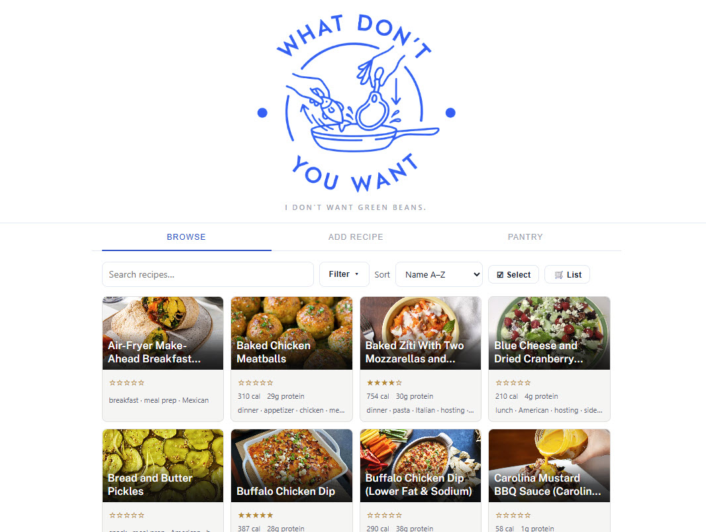

What Don't You Want

What Don't You Want (inspired by one of my favorite movie scenes) is a production recipe management app for importing, organizing, and scaling recipes across devices for the whole family.
Recipes are imported by URL, pasted text, or photo scan. The AI extracts structured data from raw page content, with a pre-save review step for tags and details before anything hits the database.
Scale a recipe to any serving size and units convert inline. A pantry inventory tracks what's on hand across fridge, freezer, and dry storage. A "What Can I Make" view matches available ingredients to recipes ranked by fit. Shopping list and out-of-stock items push directly to Google Sheets, with checkboxes and strikethrough tracked right in the Sheet.
Two features do the most work day to day. Tap any ingredient mid-recipe for AI-suggested substitutes, weighted toward whatever's already on hand in the pantry, for the moment you're out of buttermilk or just don't want it. And a one-click health variant generator regenerates the whole recipe against constraints like reduced sugar, reduced calories, increased protein, or dietary needs like gluten-free or vegan — reasoning through the downstream effects of each change (swap oil for yogurt, bake time shifts; cut the sugar, rebalance the flavor) and writing the adjustments straight into the instructions, then saving it as a new recipe linked back to the original so nothing overwrites the family favorite.
Features in production
Tag-based filtering, sort by rating or macros, nutrition estimation via Claude, rich text instructions with formatting toolbar, bulk import for building out a library quickly, and a shared Airtable backend so the whole family reads from and writes to the same live data. Recently redesigned: a brand refresh across the whole app (new color palette, typography, and a tightened recipe grid with titles overlaid on the card image).
Architecture
Single-page app deployed via Vercel serverless functions, with the Claude API (Sonnet) handling recipe extraction and nutrition estimation. Airtable serves as the database via a token-authenticated proxy that keeps credentials off the client. Page content is fetched server-side before extraction to reduce AI drift on ingredient amounts.
Up next
Custom "what can I make" modal for left-over ingredients; general cooking tips and tricks (time and temp guidelines); more recipes.